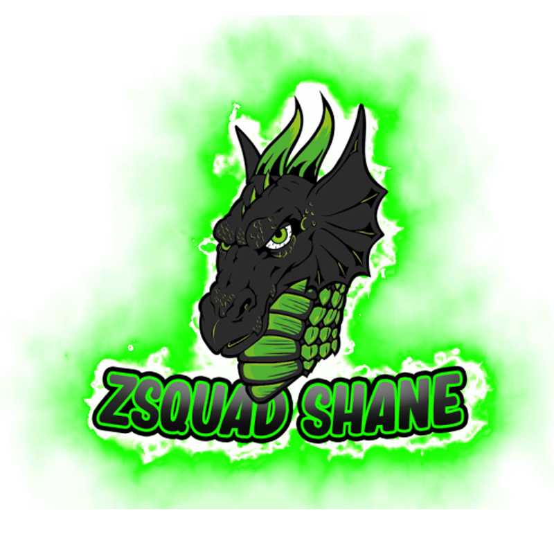
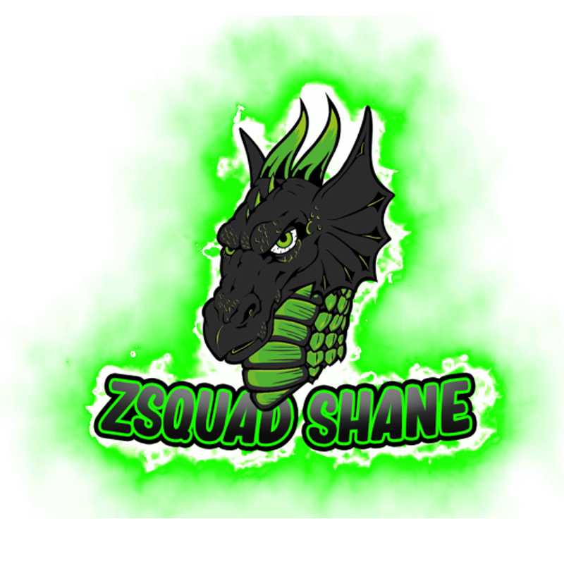
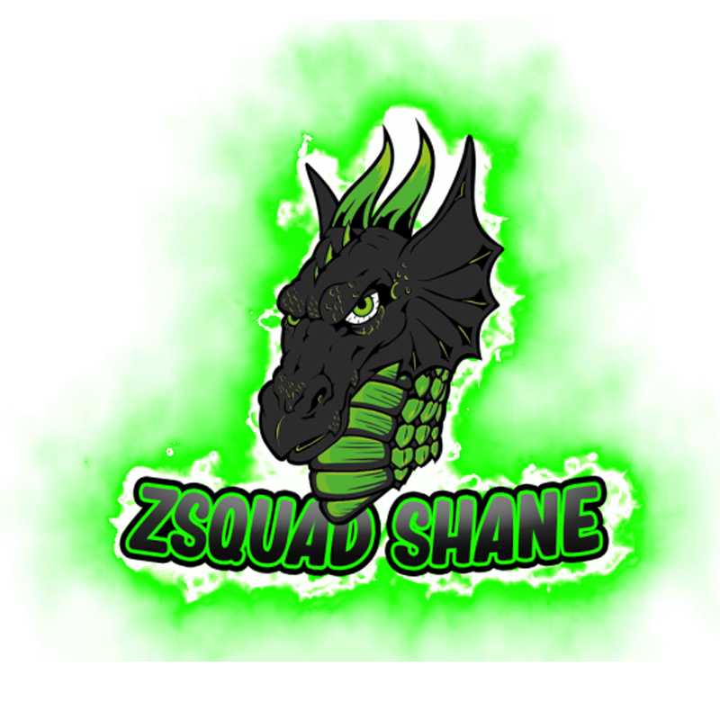
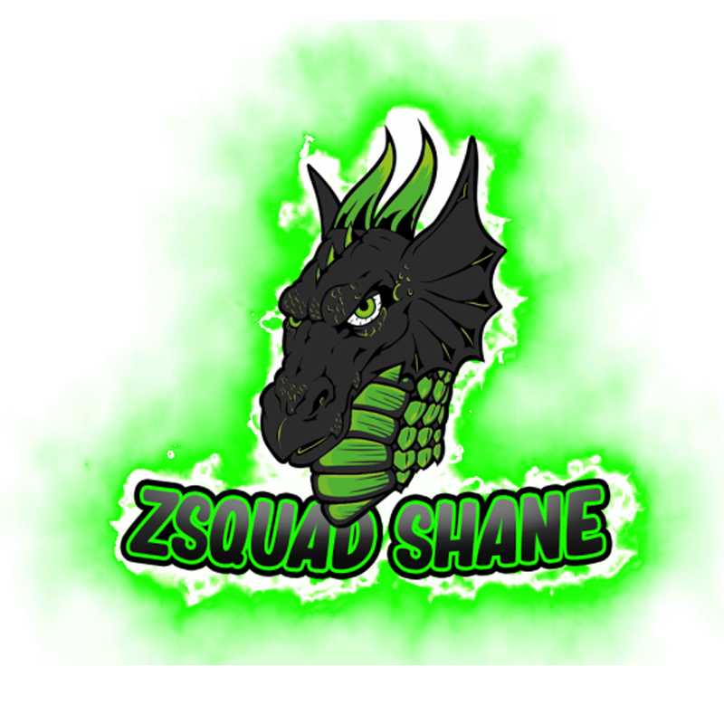

my name is shane walters, I am 24 year old, pre-t transgender male and pansexual, based in aberdare, south wales, uk.
I have a hearing impairment disabilitiy called Bilateral hearing loss, I wear cochlear implants of nucleus 7 bluetooth wireless as a support for me to able to hear and sometimes I don’t always wear it, I do communicate in british sign language and american sign language, I may vary to use spoken verbal engligh when it is needed, and I do use text or notepad to communicate if I’m on hearing break.
I am a student of Creative Media level 2 in Graphic design, Web Design, Photography, Videography, filmmaking, Video Editor. I also just started to set up my own freelancer website which you can see on here created by my good friend of mine Harry Pearce or known as WizardHarryTV, my freelance work is going to be based on graphic design, photography, videography, video editor, discord deveopment, promoter and many more things that I have in store for you to pick of my package deals which is going to be a great deal!. I also do a lot of volunteering jobs in my time in Deaf community to give my support and my helping hands which I love to do, with Cardiff Deaf Club, Deaf cymru lgbtqa+, and Celtic Deaf Festival in Cardigan, West Wales.
I am also YouTuber and Twitch Streamer, you can find me on Youtube, Twitch and other social media search in “zsquadshane” and you’ll find me on there and you can see what I do for myself and the whole community of The Dragon Cave! I also merge with other Deaf Streamers or YouTubers to help the whole deaf community to build their own brand or community with the support of the mergers, I am really looking forward for you guys to see my journey and my work that I do everyday, I have a lot of plans ahead of me and my life! Thank you for coming to support and checking my work! We love you!
I love to go travelling to explore in new areas that I have never been and experience to learn the area, culture, food, styles, background, humanity, races, religion, and many more, I do a lot of camping in festivals with family or friends in areas I never been to get that camping culture and learn to how to survival, cooking, defence, warmth, comfort, and I love to go to events and activities to attend such as Deaf community event, gaming event, artist or history event, lgbtqa+ event, sport event and many more, I hope to do overboard exploring in the future around the world, my first trip will be in New York, Times Square which I am looking forward to experience New York Culture!